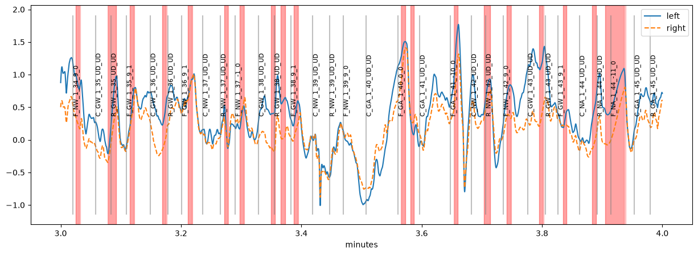
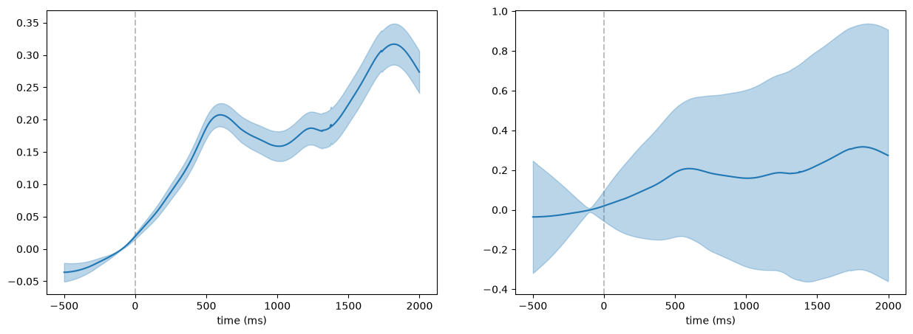
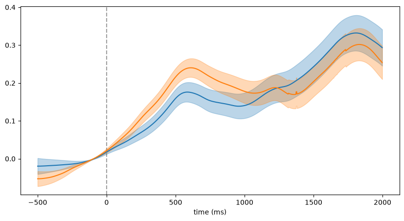
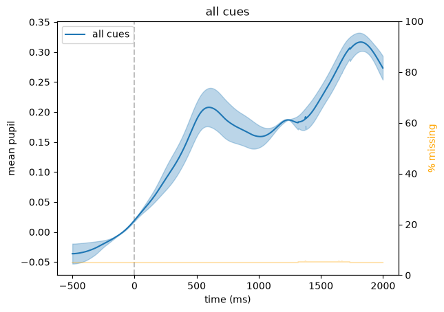
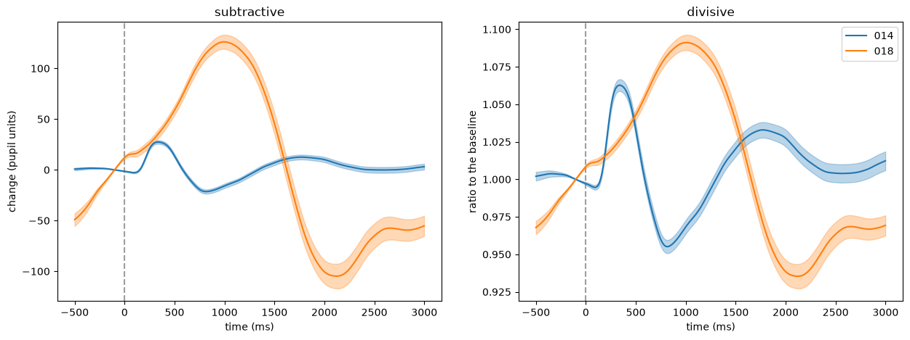

Event-related pupil dilations#
We are often interested in how the pupil responds to certain events, for example stimuli. One method to investigate this is to extract the average pupil dilation surrounding the events of interest (event-related pupil dilation, ERPD).
In pypillometry, this works in two steps:
get_epochs()selects the events and defines a time window around each of themget_segments()cuts the data in these windows into aSegmentedEyeDataobject; its pupil methods (.pupil) baseline-correct and plot the segments, and they can be averaged across subjects
[1]:
import pypillometry as pp
from pypillometry import u
import matplotlib.pyplot as plt
import numpy as np
Here, we use the EDF file from the import examples, which is stored in the data folder of the repository.
[2]:
d = pp.EyeData.from_eyelink("../../data/test.edf")
d
pp: 17:46:30 | INFO | _read_edf:726 | Loading EDF file: ../../data/test.edf (current log level: INFO, set to DEBUG to see eyelinkio output)
pp: 17:46:41 | INFO | from_eyelink:1561 | Filtering out Eyelink triggers
[2]:
EyeData — test.edf
Signal overview
![left_pupil sparkline]()
![left_x sparkline]()
![left_y sparkline]()
![right_pupil sparkline]()
![right_x sparkline]()
![right_y sparkline]()
Data glimpse
EyeDataDict(vars=6,n=1245363,shape=(1245363,)): left_x (float64): 817.3, 817.0, 816.7, 816.7, 816.7... left_y (float64): 345.2, 343.5, 341.6, 340.4, 340.2... left_pupil (float64): 1707.0, 1706.0, 1705.0, 1706.0, 1707.0... right_x (float64): 860.6, 860.7, 861.2, 861.7, 861.6... right_y (float64): 375.2, 375.9, 376.6, 376.8, 376.9... right_pupil (float64): 1738.0, 1739.0, 1739.0, 1740.0, 1742.0...
Recent history
- set_events(Events: 1027 events | units=ms)
Next, we apply a basic blink detection and interpolation pipeline as illustrated in the blinks example, followed by a low-pass filter and z-scaling:
[3]:
d = d | (pp.pupil.blinks_detect(vel_onset=-15)
| pp.pupil.blinks_merge_close(distance=100 * u.ms)
| pp.pupil.blinks_interpolate(margin=(50, 150) * u.ms)
| pp.pupil.lowpass_filter(cutoff=5)
| pp.scale(variables="pupil"))
plt.figure(figsize=(15, 5))
d.plot.pupil_plot(plot_range=(3, 4) * u.min, units="min")
pp: 17:46:43 | WARNING | blinks_interpolate:846 | Skipping blink 552 for left: no usable data at its anchor points (t1=1104152, t2=1104471, t3=1245361, t4=1245362)
pp: 17:46:43 | WARNING | blinks_interpolate:846 | Skipping blink 538 for right: no usable data at its anchor points (t1=1104179, t2=1104469, t3=1245361, t4=1245362)

Next, we want to create ERPDs based on some of the event markers in this dataset. The markers have a special structure where each label contains information about the stimulus, the experimental condition, the block etc. Let’s look at the first few events:
[4]:
list(d.events.labels[0:5])
[4]:
[np.str_('DISPLAY_COORDS = 0 0 1919 1079'),
np.str_('experiment_start'),
np.str_('C_GW_1_1_UD_UD'),
np.str_('F_GW_1_1_10_0'),
np.str_('C_NW_1_2_UD_UD')]
The first letter codes which stimulus was presented, the letters after the first underscore code the experimental condition. We use get_epochs() to select the events and the time window around them. We start by extracting all stimuli coded as “C” (cues) by using event_select="C_", which matches all labels that contain the string “C_”. The window goes from 500 ms before until 2000 ms after each cue:
[5]:
cue_epochs = d.get_epochs("C_", window=(-500, 2000) * u.ms)
cue_epochs
[5]:
Epochs 'C_' | 400 epochs, window (-500, 2000) ms
get_segments() extracts the data in these intervals for one or several channels (here, the pupil of the left eye; by default, all channels). We then apply a baseline correction by subtracting the mean in the 200 ms before the cue (the baseline window is given in ms):
[6]:
erpd_cue = d.get_segments(cue_epochs, "left_pupil", name="cue")\
.pupil.baseline_correct(window=(-200, 0))
erpd_cue
pp: 17:46:44 | INFO | baseline_correct:360 | Baseline correction (subtract) applied using window [-200. 0.]
[6]:
SegmentedEyeData — cue
Channels (mean over segments; red line = event onset)
![left_pupil (5.0% missing) sparkline]()
Epochs
Epochs 'C_' | 400 epochs, window (-500, 2000) ms
This ERPD contains one segment per cue, from 500 ms before until 2000 ms after the cue onset. The pupil.plot() function shows the mean curve and its standard error. In addition, it shows the percentage of missing (masked, e.g., interpolated) datapoints at each time point. We can choose what is displayed as the error ribbon by passing a function to varfct. For example, we can use varfct=np.std to display the standard deviation instead of the standard error.
[7]:
fig, axs = plt.subplots(1, 2, figsize=(15, 5))
erpd_cue.pupil.plot(ax=axs[0], title="standard error")
erpd_cue.pupil.plot(varfct=np.std, ax=axs[1], title="standard deviation");

Sometimes, selecting events based on a string is not sufficient. For example, in our dataset, we would like to compare cues (labels starting with “C_”) from conditions “GW” and “NA” against cues from conditions “NW” and “GA” (what exactly that means is not important here). We can do that by passing a function as event_select. The function should return True whenever a label should be used and False otherwise. Here are two such functions, one for cues from the “GW”/”NA” conditions
(call them “congruent”) and one for the “NW”/”GA” conditions (call them “conflict”):
[8]:
def is_conflict_cue(label):
parts = label.split("_")
return len(parts) >= 2 and parts[0] == "C" and parts[1] in ["NW", "GA"]
def is_congruent_cue(label):
parts = label.split("_")
return len(parts) >= 2 and parts[0] == "C" and parts[1] in ["GW", "NA"]
First, the label is split into parts at “_”. The functions return True only if the first part is a “C” and the second part is one of the relevant conditions. We can check that the functions work by applying them to some labels:
[9]:
is_congruent_cue("C_GW"), is_congruent_cue("C_GA")
[9]:
(True, False)
test_selector() shows which of the events in the dataset are selected by such a function:
[10]:
from pypillometry.convenience import test_selector
test_selector(d, is_conflict_cue)
[10]:
array(['C_NW_1_2_UD_UD', 'C_GA_1_4_UD_UD', 'C_GA_1_5_UD_UD',
'C_GA_1_8_UD_UD', 'C_NW_1_10_UD_UD', 'C_GA_1_12_UD_UD',
'C_NW_1_14_UD_UD', 'C_GA_1_17_UD_UD', 'C_GA_1_18_UD_UD',
'C_NW_1_20_UD_UD', 'C_NW_1_25_UD_UD', 'C_GA_1_27_UD_UD',
'C_GA_1_28_UD_UD', 'C_NW_1_29_UD_UD', 'C_GA_1_30_UD_UD',
'C_NW_1_32_UD_UD', 'C_NW_1_34_UD_UD', 'C_NW_1_37_UD_UD',
'C_NW_1_39_UD_UD', 'C_GA_1_40_UD_UD', 'C_GA_1_41_UD_UD',
'C_NW_1_42_UD_UD', 'C_GA_1_45_UD_UD', 'C_NW_1_47_UD_UD',
'C_NW_1_50_UD_UD', 'C_NW_1_52_UD_UD', 'C_GA_1_54_UD_UD',
'C_NW_1_55_UD_UD', 'C_GA_1_57_UD_UD', 'C_NW_1_59_UD_UD',
'C_GA_1_64_UD_UD', 'C_NW_1_66_UD_UD', 'C_GA_1_67_UD_UD',
'C_GA_1_70_UD_UD', 'C_GA_1_72_UD_UD', 'C_GA_1_73_UD_UD',
'C_NW_1_75_UD_UD', 'C_NW_1_76_UD_UD', 'C_GA_1_77_UD_UD',
'C_NW_1_79_UD_UD', 'C_GA_2_3_UD_UD', 'C_GA_2_6_UD_UD',
'C_NW_2_9_UD_UD', 'C_GA_2_10_UD_UD', 'C_NW_2_11_UD_UD',
'C_NW_2_13_UD_UD', 'C_GA_2_14_UD_UD', 'C_NW_2_16_UD_UD',
'C_GA_2_17_UD_UD', 'C_NW_2_18_UD_UD', 'C_GA_2_25_UD_UD',
'C_NW_2_28_UD_UD', 'C_GA_2_30_UD_UD', 'C_NW_2_31_UD_UD',
'C_NW_2_32_UD_UD', 'C_NW_2_33_UD_UD', 'C_GA_2_34_UD_UD',
'C_NW_2_35_UD_UD', 'C_NW_2_36_UD_UD', 'C_GA_2_37_UD_UD',
'C_GA_2_39_UD_UD', 'C_GA_2_42_UD_UD', 'C_NW_2_43_UD_UD',
'C_NW_2_44_UD_UD', 'C_NW_2_46_UD_UD', 'C_NW_2_49_UD_UD',
'C_GA_2_58_UD_UD', 'C_GA_2_59_UD_UD', 'C_GA_2_60_UD_UD',
'C_NW_2_61_UD_UD', 'C_GA_2_62_UD_UD', 'C_NW_2_65_UD_UD',
'C_NW_2_67_UD_UD', 'C_NW_2_69_UD_UD', 'C_GA_2_71_UD_UD',
'C_GA_2_75_UD_UD', 'C_NW_2_76_UD_UD', 'C_GA_2_78_UD_UD',
'C_GA_2_79_UD_UD', 'C_GA_2_80_UD_UD', 'C_GA_3_1_UD_UD',
'C_GA_3_3_UD_UD', 'C_NW_3_6_UD_UD', 'C_GA_3_8_UD_UD',
'C_GA_3_10_UD_UD', 'C_NW_3_12_UD_UD', 'C_GA_3_15_UD_UD',
'C_NW_3_17_UD_UD', 'C_NW_3_21_UD_UD', 'C_NW_3_22_UD_UD',
'C_NW_3_23_UD_UD', 'C_GA_3_24_UD_UD', 'C_GA_3_28_UD_UD',
'C_NW_3_30_UD_UD', 'C_GA_3_31_UD_UD', 'C_NW_3_32_UD_UD',
'C_GA_3_33_UD_UD', 'C_NW_3_34_UD_UD', 'C_NW_3_35_UD_UD',
'C_GA_3_38_UD_UD', 'C_NW_3_39_UD_UD', 'C_GA_3_45_UD_UD',
'C_GA_3_49_UD_UD', 'C_NW_3_50_UD_UD', 'C_NW_3_51_UD_UD',
'C_GA_3_52_UD_UD', 'C_NW_3_53_UD_UD', 'C_GA_3_55_UD_UD',
'C_NW_3_56_UD_UD', 'C_GA_3_57_UD_UD', 'C_GA_3_61_UD_UD',
'C_NW_3_64_UD_UD', 'C_GA_3_66_UD_UD', 'C_NW_3_67_UD_UD',
'C_GA_3_68_UD_UD', 'C_NW_3_69_UD_UD', 'C_NW_3_70_UD_UD',
'C_NW_3_72_UD_UD', 'C_GA_3_78_UD_UD', 'C_GA_3_79_UD_UD',
'C_NW_4_1_UD_UD', 'C_NW_4_5_UD_UD', 'C_NW_4_9_UD_UD',
'C_NW_4_11_UD_UD', 'C_GA_4_13_UD_UD', 'C_GA_4_17_UD_UD',
'C_NW_4_21_UD_UD', 'C_GA_4_22_UD_UD', 'C_NW_4_24_UD_UD',
'C_GA_4_25_UD_UD', 'C_NW_4_26_UD_UD', 'C_GA_4_27_UD_UD',
'C_NW_4_29_UD_UD', 'C_GA_4_31_UD_UD', 'C_GA_4_33_UD_UD',
'C_NW_4_34_UD_UD', 'C_NW_4_35_UD_UD', 'C_NW_4_37_UD_UD',
'C_GA_4_38_UD_UD', 'C_GA_4_39_UD_UD', 'C_NW_4_41_UD_UD',
'C_NW_4_43_UD_UD', 'C_GA_4_47_UD_UD', 'C_GA_4_49_UD_UD',
'C_GA_4_50_UD_UD', 'C_GA_4_52_UD_UD', 'C_GA_4_53_UD_UD',
'C_GA_4_54_UD_UD', 'C_GA_4_56_UD_UD', 'C_NW_4_58_UD_UD',
'C_NW_4_59_UD_UD', 'C_GA_4_60_UD_UD', 'C_NW_4_66_UD_UD',
'C_NW_4_67_UD_UD', 'C_GA_4_68_UD_UD', 'C_NW_4_72_UD_UD',
'C_NW_4_74_UD_UD', 'C_NW_4_75_UD_UD', 'C_GA_4_78_UD_UD',
'C_GA_4_80_UD_UD', 'C_GA_5_1_UD_UD', 'C_NW_5_2_UD_UD',
'C_GA_5_3_UD_UD', 'C_GA_5_6_UD_UD', 'C_GA_5_7_UD_UD',
'C_NW_5_8_UD_UD', 'C_NW_5_9_UD_UD', 'C_NW_5_11_UD_UD',
'C_NW_5_14_UD_UD', 'C_GA_5_21_UD_UD', 'C_GA_5_22_UD_UD',
'C_NW_5_24_UD_UD', 'C_NW_5_25_UD_UD', 'C_NW_5_27_UD_UD',
'C_NW_5_28_UD_UD', 'C_NW_5_30_UD_UD', 'C_GA_5_31_UD_UD',
'C_GA_5_34_UD_UD', 'C_GA_5_35_UD_UD', 'C_NW_5_36_UD_UD',
'C_NW_5_38_UD_UD', 'C_NW_5_41_UD_UD', 'C_NW_5_42_UD_UD',
'C_GA_5_43_UD_UD', 'C_GA_5_45_UD_UD', 'C_NW_5_46_UD_UD',
'C_NW_5_47_UD_UD', 'C_GA_5_49_UD_UD', 'C_GA_5_50_UD_UD',
'C_NW_5_53_UD_UD', 'C_NW_5_56_UD_UD', 'C_GA_5_58_UD_UD',
'C_NW_5_62_UD_UD', 'C_NW_5_67_UD_UD', 'C_GA_5_70_UD_UD',
'C_GA_5_71_UD_UD', 'C_GA_5_74_UD_UD', 'C_GA_5_77_UD_UD',
'C_GA_5_78_UD_UD', 'C_GA_5_79_UD_UD'], dtype='<U260')
Now we can create one ERPD for each of the selection functions:
[11]:
erpd_conf = d.get_segments(d.get_epochs(is_conflict_cue, window=(-500, 2000) * u.ms),
"left_pupil", name="conflict").pupil.baseline_correct(window=(-200, 0))
erpd_cong = d.get_segments(d.get_epochs(is_congruent_cue, window=(-500, 2000) * u.ms),
"left_pupil", name="congruent").pupil.baseline_correct(window=(-200, 0))
pp: 17:46:44 | INFO | baseline_correct:360 | Baseline correction (subtract) applied using window [-200. 0.]
pp: 17:46:44 | INFO | baseline_correct:360 | Baseline correction (subtract) applied using window [-200. 0.]
Finally, we plot both into the same axes to compare them:
[12]:
fig, ax = plt.subplots(figsize=(10, 5))
erpd_conf.pupil.plot(ax=ax, label="conflict")
erpd_cong.pupil.plot(ax=ax, label="congruent", title="Cues");

With many conditions, writing a function for each selection becomes tedious. Instead, the information in the labels can be stored as metadata of the events (see the event metadata tutorial). The cue labels have the form C_<condition>_<block>_<trial>_...; parse_labels() turns the parts into columns:
[13]:
ev = d.events.parse_labels(r"^C_(?P<cond>[GN][WA])_(?P<block>\d+)_(?P<trial>\d+)")
ev.filter("C_")[:5]
[13]:
| Onset (ms) | Label | cond | block | trial | |
|---|---|---|---|---|---|
| 0 | 1345.0 | C_GW_1_1_UD_UD | GW | 1.0 | 1.0 |
| 1 | 6859.0 | C_NW_1_2_UD_UD | NW | 1.0 | 2.0 |
| 2 | 12074.0 | C_NA_1_3_UD_UD | NA | 1.0 | 3.0 |
| 3 | 17306.0 | C_GA_1_4_UD_UD | GA | 1.0 | 4.0 |
| 4 | 22487.0 | C_GA_1_5_UD_UD | GA | 1.0 | 5.0 |
Total: 5 events
The conflict cues are then the cues with condition “NW” or “GA”. The selected events can be passed to get_epochs() directly and give the same epochs as the function is_conflict_cue():
[14]:
conflict_cues = ev.filter(cond=["NW", "GA"])
conflict_epochs = d.get_epochs(conflict_cues, window=(-500, 2000) * u.ms)
list(conflict_epochs) == list(d.get_epochs(is_conflict_cue, window=(-500, 2000) * u.ms))
[14]:
True
The epochs keep the metadata of the events (conflict_epochs.meta) and can be selected by it like events, e.g., the cues of the first block only: conflict_epochs.filter(block=1).
Group-level ERPDs#
With data from several subjects, pp.group_segments() averages the ERPDs of each subject (here, we use the two conditions as a stand-in for two subjects). The result is again a SegmentedEyeData object, with one column per subject (and the subject in the metadata of its epochs), so it can be plotted in the same way:
[15]:
group = pp.group_segments([erpd_conf, erpd_cong], name="all cues")
group.pupil.plot();

Subtractive and divisive baseline correction#
By default, baseline_correct() subtracts the baseline, so the ERPD is the change in the units of the data. With method="divide", the segments are divided by their baseline, so the ERPD is the ratio to the baseline (1 = no change; method="percent" gives the change in %). Within one recording, both give nearly the same curve: the baselines of the trials are similar, so dividing by them only changes the units. The difference matters when comparing recordings whose pupils differ in size,
or whose units differ (e.g., between eye trackers or camera distances): the same dilation in units is a larger relative change for a small pupil than for a large one.
Here, we compare two participants of the RLMW study (a reinforcement-learning task; the full dataset is on OSF) whose pupils differ about threefold in size, with segments around the stimuli. Their EDF files are downloaded from OSF. Divisive correction needs the pupil size in its original units, so these data are not z-scored:
[16]:
# EDF files of participants 014 and 018 (https://osf.io/ca95r, data/eyedata/edf);
# pass cache_dir= to from_eyelink() to keep the downloads
urls = {"014": "https://osf.io/download/6598031a03446185e268f53c/",
"018": "https://osf.io/download/659803212a6560886c0bf2a0/"}
participants = {}
with pp.nologging(): # no messages about the downloads
for name, url in urls.items():
p = pp.EyeData.from_eyelink(url) | (pp.pupil.blinks_detect() | pp.pupil.blinks_interpolate()
| pp.pupil.lowpass_filter(cutoff=5))
participants[name] = p.get_segments(p.get_epochs("S_", (-500, 3000) * u.ms), "left_pupil")
# mean pupil size in the baseline window (-200 to 0 ms)
{name: round(float(seg["left_pupil"][(seg.tx >= -200) & (seg.tx < 0)].mean()))
for name, seg in participants.items()}
[16]:
{'014': 451, '018': 1479}
[17]:
fig, axs = plt.subplots(1, 2, figsize=(15, 5))
for name, seg in participants.items():
seg.pupil.baseline_correct((-200, 0), inplace=False).pupil.plot(ax=axs[0], label=name)
seg.pupil.baseline_correct((-200, 0), method="divide", inplace=False).pupil.plot(ax=axs[1], label=name)
axs[0].set(title="subtractive", ylabel="change (pupil units)")
axs[1].set(title="divisive", ylabel="ratio to the baseline")
axs[1].legend();
pp: 17:47:04 | INFO | baseline_correct:360 | Baseline correction (subtract) applied using window [-200. 0.]
pp: 17:47:04 | INFO | baseline_correct:360 | Baseline correction (divide) applied using window [-200. 0.]
pp: 17:47:04 | INFO | baseline_correct:360 | Baseline correction (subtract) applied using window [-200. 0.]
pp: 17:47:04 | INFO | baseline_correct:360 | Baseline correction (divide) applied using window [-200. 0.]

The pupil of participant 018 is about three times as large as that of participant 014 (baseline about 1480 vs. 450 units). After subtractive correction, the response of participant 018 looks about five times as large (about +126/−105 vs. +27/−21 units), and that of participant 014 is hardly visible. After divisive correction, the responses are of similar size (about +9 %/−7 % vs. +6 %/−5 %): most of the difference in units was due to the size of the pupil. What remains are differences in the time course of the responses.
Divisive correction is sensitive to small baselines, e.g., when the baseline period is distorted by a blink, which is why subtractive correction is usually recommended within a recording (Mathôt et al., 2018, Behavior Research Methods). To compare participants or eye trackers, the relative change can be the more meaningful measure.
The segments hold the gaze as well (d.get_segments(epochs) cuts all channels). The tutorial Gaze in regions of interest around events shows how to analyse where participants look after the events, and how to combine it with the pupil.